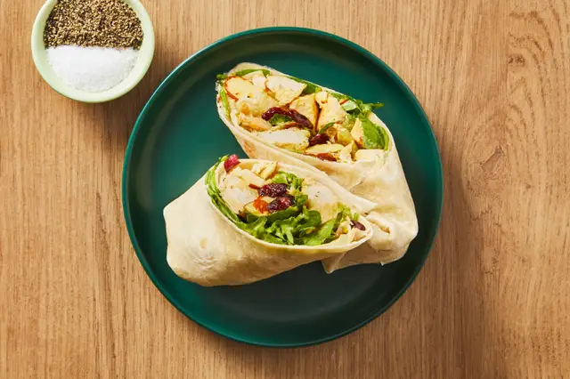

Honey Mustard Chicken Salad Wraps
with Almonds & Dried Cranberries
Home

- Fully Cooked Chicken Breasts
- Flour Torillas
- Salads
- Dried Cranberries
- Honey Dijion Drssing
- Sliced Almonds
- Salt + Pepper
- Wash and dry produce.
- Cut chicken into 1⁄2-inch pieces. Season with salt and pepper.
- In a large bowl, toss chicken, mixed greens, almonds, and
cranberries with dressing.
- Wrap tortillas in damp paper towels and microwave until warm and pliable,
30 seconds.
- Place tortillas on a clean work surface. Place chicken salad on the
bottom third of each tortilla. Fold up bottom side of each tortilla over
filling, then fold over left and right sides toward the filling. Roll up
tortillas, starting with filled sides, to form wraps. TIP: For less mess,
place each tortilla on a large piece of foil or parchment paper before
rolling, then wrap up (and unwrap as you eat!).
- Halve wraps on a diagonal; divide between plates and serve.